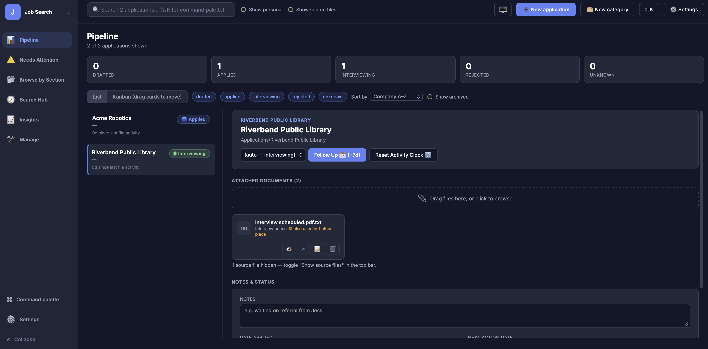
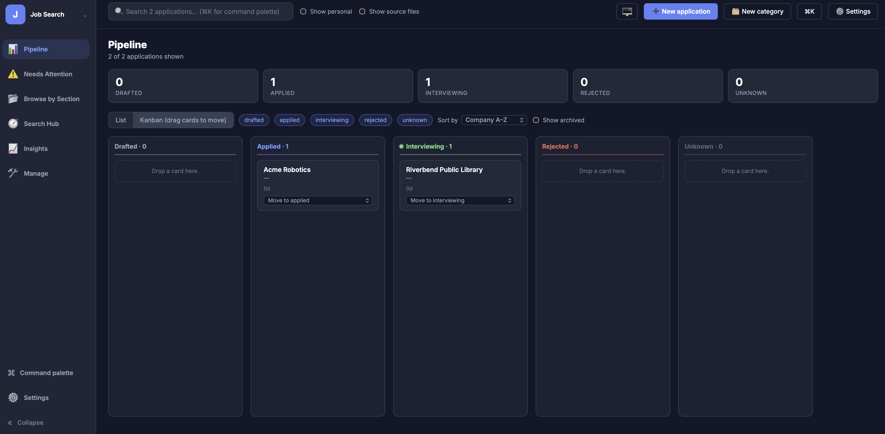
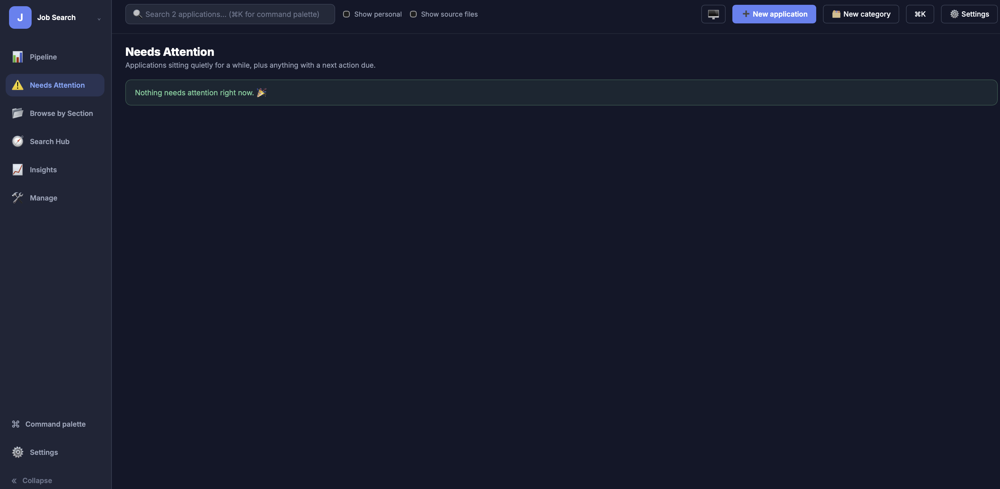
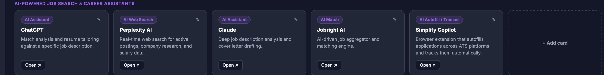

JobTracker Hub (v1.0.0) is a local, private dashboard over a folder of job-application documents already sitting on disk. Instead of asking users to migrate resumes, cover letters, and correspondence into a SaaS tracker, it reads whatever folder structure they already use for a job search and turns it into an interactive pipeline — list and Kanban views, follow-up triage, full-text search, and analytics — as a single process running on localhost.
JobTracker Hub is local software by design — there is no hosted demo. It runs as a Python process on the machine that’s running it, and the API binds to
127.0.0.1only.
Project Highlights
- Designed a local-first architecture: FastAPI server bound to
localhost, SQLite storage, and a filesystem-backed document model — no account, no cloud service, no external upload of application documents. - Built a React frontend (loaded from a CDN, no build step) served as a single static HTML file directly by the FastAPI backend, so the whole application runs as one process.
- Implemented list and drag-and-drop Kanban pipeline views, with cards reflecting live status and days-since-activity.
- Built a Needs Attention triage view driven by configurable staleness and next-action rules, with follow-up, snooze, archive, and bulk actions — nothing is permanently deleted through normal workflows.
- Added full-text search across indexed filenames, companies, and roles, with inline result highlighting, plus a
⌘K/Ctrl+Kcommand palette andj/k/arrow-key list navigation. - Implemented document management (upload, rename, delete-to-Trash) and an inline PDF viewer.
- Built an Insights view (response rate, interview rate, time-to-response, application velocity) rendered with Chart.js.
- Personally use the app daily to manage my own job search — across 110+ tracked applications it shows an 81% response rate and 7% interview rate, both well above published industry benchmarks (2–10% response, 2–3% interview).
- Designed a two-database architecture that separates the disposable, auto-rebuilt filesystem index from durable user-entered data, so rebuilding the index never destroys notes, statuses, or dates.
- Added a configuration-driven classification system (
classify_config.json,classify.py) so the folder-to-section mapping and document-type detection can be adapted to a user’s own folder structure. - Supported multiple independent trackers through a tracker switcher, and a zero-config installation model where the app determines its tracker root from its own filesystem position.
My Role: Designer and Developer
I designed and built the application independently, including:
- Backend API design and implementation in FastAPI
- The filesystem indexer and classification/configuration system
- The two-database data model separating generated index data from user overrides
- The full React frontend, including the Kanban board, command palette, and keyboard navigation
- Search, document management, and the inline PDF viewer
- Insights metrics and Chart.js visualizations
- Multi-tracker/workspace support
- Project documentation, including the user guide
Core Capabilities
- Pipeline — list and drag-and-drop Kanban views of every application, grouped by status.
- Needs Attention — rule-based triage for stale applications and due next actions, with follow-up, snooze, archive, and bulk operations.
- Search — full-text search across filenames, companies, and roles, with highlighted matches.
- Document Management — drag-and-drop upload, in-place rename, and delete-to-Trash, with an inline PDF viewer.
- Insights — response rate, interview rate, time-to-response, and velocity/status-distribution charts.
- Multiple Trackers — a tracker switcher for managing more than one independent job search from the same running app.
- Command Palette and Keyboard Navigation —
⌘K/Ctrl+Kfuzzy search and actions, plusj/k/arrow-key list navigation. - Configuration-Driven Classification — editable rules for mapping folder names to dashboard sections and detecting document types.
Gallery



Technology Stack
| Area | Technologies |
|---|---|
| Backend | Python, FastAPI, Uvicorn, Pydantic |
| Frontend | React (CDN, no build step), static HTML, Chart.js |
| Data | SQLite, filesystem-backed document index |
| Client persistence | localStorage (index cache), URL-driven view state |
| Interaction | Native HTML5 drag-and-drop, keyboard navigation |
| Packaging | Self-contained _app/ directory, Python virtual environment |
Architecture and Local Data Model
Browser
↓
React frontend (served as static HTML, no build step)
↓
FastAPI server on 127.0.0.1
↓
SQLite + local filesystem
The application is deliberately built to run as one lightweight local process rather than a hosted stack. Two design decisions shape that architecture:
- Two SQLite databases with different lifetimes.
jobtracker.dbis a disposable, auto-rebuilt index of whatever is currently on disk.overrides.dbholds the user’s own data — status corrections, notes, dates, snoozes, and merges — keyed so that a full index rebuild never overwrites it. - Zero-config tracker detection. The
_app/directory is meant to sit one level inside the folder being tracked. The application resolves its tracker root from its own filesystem position rather than requiring a configured path, so there’s nothing to type in or paste on first run.
This is local-first, privacy-conscious software rather than a security product: keeping documents on the user’s own machine and binding the server to localhost avoids uploading sensitive job-search material to a third party, but it does not by itself guarantee the machine is otherwise secure.
Repository Structure
| Resource | Purpose |
|---|---|
_app/ |
Backend (api.py, db.py, build_index.py, classify.py) and frontend (frontend/index.html) |
_app/classify_config.json |
User-editable section-mapping and classification rules |
sample-tracker/ |
Sample job-search folder for trying the app before pointing it at real documents |
docs/ |
User guide (PDF) and LaTeX source |
README.md |
Project README |
Local Development
git clone https://github.com/willmaddock/jobtracker-hub.git
cd jobtracker-hub
cp -r sample-tracker my-tracker
cp -r _app my-tracker/_app
cd my-tracker/_app
python3 -m venv .venv
source .venv/bin/activate # Windows: .venv\Scripts\activate
pip install -r requirements.txt
uvicorn api:app --reload --port 8000
Open http://127.0.0.1:8000 and click Build index to see the bundled sample data, then point _app/ at a real job-search folder once you’re comfortable with the app.
Engineering Value
This project demonstrates:
- Full-stack application design across a Python/FastAPI backend and a React frontend
- API design and local data modeling with SQLite
- Filesystem-integrated software that indexes and classifies existing user data
- Privacy-conscious, local-first architecture as a deliberate design constraint
- Complex browser interaction: drag-and-drop, command palette, keyboard navigation
- Document management and inline preview
- Analytics and data visualization
- Configuration-driven behavior for adapting to different users’ folder structures
- End-to-end product ownership, from architecture through documentation